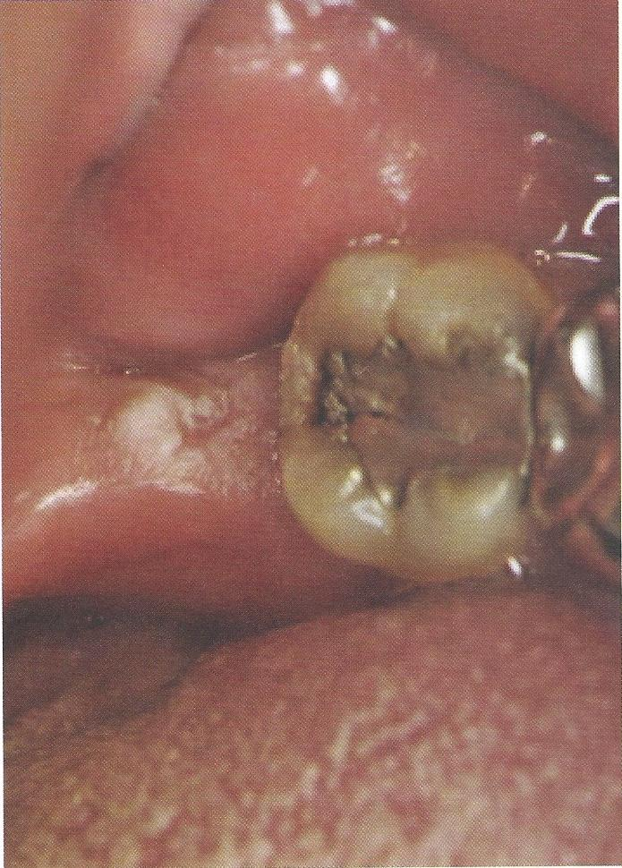

รอยโรคสีขาวที่เกิดจากการเสียดสีจากการสบของฟันบน
เกิดจากการระคายเคืองเฉพาะที่เรื้อรัง เป็นเวลานาน
เช่น ขอบฟันที่แหลมคม ฟันแตก ฟันที่มีวัสดุบูรณะฟันแตก การกัดกระแทก
พบเป็นฝ้าขาวที่ไม่สามารถเช็ดหลุดออกได้ที่เยื่อเมือกช่องปาก
ไม่มีอาการเจ็บ พบบ่อยที่กระพุุ้งแก้ม สันเหงือกว่าง เยื่อเมือกใต้ฐานฟันเทียม